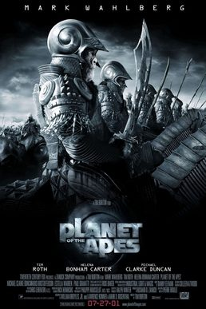

Planet of the Apes [Special Edition]



Director: Franklin J. Schaffner.
Cast: Charlton Heston, Roddy McDowell, Maurice Evansis.
Distributor: 20th Century Fox.
Classification: PG 15+
Running Time: 107 minutes.
Ever heard the obscure fact that apes are only 5% removed from humans in their DNA structure? Well this is taken to its logical conclusion in the classic 1968 science-fiction film Planet of the Apes. Starring Charlton Heston and Roddy McDowall, Planet of the Apes was a legendary piece of futuristic fantasy that spawned a pop-culture phenomenon. While not quite in the same realm as 2001: A Space Odyssey, the film certainly raised the benchmark in the science-fiction genre. And now 20th Century Fox have re-released it on DVD, with a stack of extra features and enhanced sound and picture quality. So how does Planet of the Apes stand up after 35 years?
With the film released long before Charlton Heston became a bible-bashing advocate of the NRA, it can’t be denied that Planet of the Apes has taken on a little kitsch value. This is never more evident than in the opening scene, in which a young Charlton Heston sits at a 1960’s spaceship console – chomping on a big fat cigar, no less. About to enter deep sleep hibernation with his astronaut colleagues for 700 years, he dictates a message to those whom he would meet upon awakening. “You who are reading me are now a different breed, hopefully a better one. I leave the 20th century with no regrets.” But the message of Planet of the Apes is a little bleaker, and Heston’s jaded character Taylor has hitched the first spaceship out of the solar system in the hope of finding something better than mankind. “Tell me, does man, that marvel of the universe, that glorious paradox who has sent me to the stars, still make war against his brother, keep his neighbour’s children starving?”
Naturally, something goes horribly wrong on the expedition, with the astronauts waking 2000 years into the future only to find that their ship has crash-landed on a distant planet where human life appears absent and the silence is deafening. With one of the crew having died in the crash, the remaining three set in search of life on the mystery planet. But the outlook is bleak. “Time has wiped out everything you knew,” Taylor tells his fellow astronauts. “Accept it, you’ll sleep better.” Before long they discover that the planet is ruled by an intelligent breed of speaking apes, which use a primitive race of humans for experimentation and sport. With the apes emerging out of the bushes on horseback to hunt their human prey, Taylor finds himself captured and subjected to ritual humiliation, whilst his fellow crew-members fall victim to a crueller fate and are destroyed by the aggressors. Nonetheless, Taylor eventually emerges as a threat to the dominance of the apes, when it is revealed that he is an intelligent being who is capable of speech.
While the concept of Planet of the Apes certainly seems hokey, it has held up surprisingly well over the years. Engaging the viewer on an intellectual level, Planet of the Apes fulfills the classic role of science fiction – offering a reflection on both the current and future direction of humanity. The film certainly has some really intriguing ideas, and openly addresses religious, social and political themes. The society of the apes is openly contrasted to that of our own: they have politics, science, slavery and social hierarchies, and their civilization is one in which religion is used to control the masses. But Taylor is a character who refuses to be held down, and his intelligence challenges the authority of the dominant simians. The famous Dr Zaius character (Maurice Evansis) is both the Minister of Science and the Chief Defender of the Faith, and has his own agenda in wishing to suppress knowledge of Taylor’s existence, and uphold the truth of the “Sacred Scrolls”. But more importantly, Planet of the Apes delivers a dark blanket judgment on mankind’s self-destructive streak. This is conveyed clearly in the film’s final sequence as Taylor looks upon the desolation of one of earth’s most famous icons.
It is the performance of Charlton Heston that holds the film together; wonderfully cocky and cynical yet world-weary and wise, Taylor is a character who has little faith in the redemptive power of mankind. In one memorable scene he openly mocks his astronaut colleague as an American flag is planted on the soil of the mysterious planet. “Chalk up another victory for the human spirit,” he says, laughing in a Machiavellian fashion. And who could forget some of the classic lines that he is given to work with: “Get your stinking paws off me, you damn dirty ape!” he screams in self-righteous rage at one point. The great characterisations are complimented by an incredibly effective musical score, as well as some stunning cinematography – especially in the wide-open, empty shots of the desert in the film’s opening sequences.
Whilst watching Planet of the Apes, I was struck by the possibility that it may have a little trouble holding the attention of contemporary audiences. If you're aghast at the concept of apes on horseback then it’s possible you’ll confuse the film’s genre as being one of comedy. The viewer’s attention may also have a tendency to stray as characters frequently descend into what merely feels like a series of monologues. But for a film this old, Planet of the Apes is still undeniably cool. A relic from a by-gone Hollywood era when sci-fi wasn’t merely an excuse for explosions and special effects, viewing it again crystallizes why Tim Burton’s shallow remake was so bitterly disappointing. If you can overlook the kitsch value (or alternatively embrace it), and are interested in some classic sci-fi with a thinly disguised commentary on the suffering condition of man, then Planet of the Apes comes highly recommended.
Special Features: Over 3 hours of bonus material, including audio commentaries, documentaries, featurettes, stills galleries and theatrical trailers.
Rating: 4 out of 5